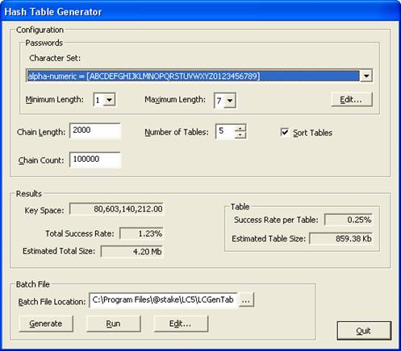

Using Hash Table Generator
The Hash Table
Generator is included in your LC5 installation. It is able to generate
password hashes, however the process requires several days.

Configuration for the Hash Generator determines what types of passwords to look for, and ultimately determines how long it will take to crack the passwords.
For Passwords, select a Character Set for the Hash Generator to crack. The following Character Sets are available:
- All - Searches all possible passwords using characters and symbols.
- Alpha - Searches passwords made up of the 26-character alphabet.
- Alpha-Numeric - Searches passwords made up of the 26 charcater alphabet and all numbers 0-9.
- Alpha-Numeric-Symbol14 - Searches passwords with a maximum lenght of 14 characters made up of the 26 character alphabet, all numbers 0-9, and all symbols.
- Alpha-Space - Searches passwords made up of the 26 character alphabet and spaces.
Modify the length of the cracked passwords by changing the Minimum and Maximum length from 1-7. The characters sets are edited in the charset.txt file. Use the Edit button to bring up this file.
The Chain Length and Count is modified with values, and you can change the number of tables from 1-99. Click the check box to Sort Tables.
The Generator's results are posted in a number of categories:
- Key Space -
- Total Success Rate - Measured in percentage of success.
- Estimated Total Size - The size of the generated file the output for results.
Table
The results of the table is measured as follows:
- Success Rate per Table - Measured in percentage.
- Estimated Table Size - Displays the size of the table.
You can dictate the Batch File Location and the Name of the Batch by typing in an address or click the button and Browse to the desired location.
- Generate - Generates a hash table.
- Run - Executes the Table Generator.
- Edit... - Edit the .bat file in Notepad.
- Quit - Exits the program.
|